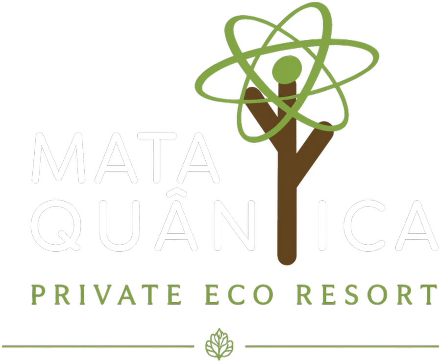
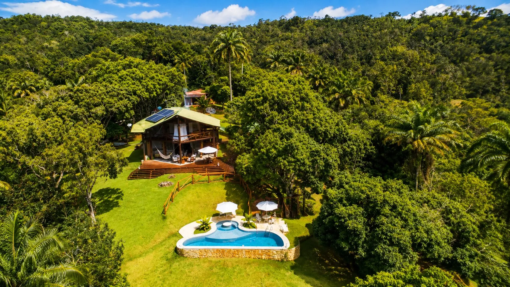

O Instituto Gaia Soul nasceu em 2019 com o propósito de aproximar pessoas ao oceano por meio da educação, ciência, inovação e experiências transformadoras.
Acreditamos que só cuidamos do que conhecemos.
Conheça nossa história
Um ecossistema integrado, onde cada projeto se conecta para amplificar nosso impacto na sociedade e no meio ambiente.

Plataforma educacional com 11 livros didáticos, realidade virtual e jornada gamificada, alinhada à BNCC e à Década do Oceano.
Conhecer o projeto
Uma expedição pelas profundezas do oceano por meio da realidade virtual, dentro de uma estrutura que simula um submarino.
Conhecer o projeto
Expedição científica ao Ártico que transforma imagens terrestres e subaquáticas em conteúdos didáticos sobre as mudanças climáticas.
Conhecer o projeto
Experiências educacionais imersivas em aeroportos e shopping centers, com recursos audiovisuais de ponta.
Conhecer o projeto
A conexão consciente com o oceano como ferramenta para promover bem-estar, saúde integral e consciência ambiental.
Conhecer o projeto
O esporte como ferramenta de inclusão social e porta de entrada para a Cultura Oceânica na Baía do Iguape e em Salvador.
Conhecer o projetoO oceano regula o clima, produz boa parte do oxigênio que respiramos e sustenta comunidades inteiras. Conhecer é o primeiro passo para cuidar.
Assistir no YouTube
Um refúgio na Mata Atlântica para quem busca reconexão com a natureza. Um projeto irmão do Instituto Gaia Soul, com a mesma essência de cuidado com o meio ambiente.
Conhecer a Mata Quântica
Nossas ações contribuem para os Objetivos de Desenvolvimento Sustentável da ONU.
A OceanoTerapia promove saúde integral pela conexão consciente com o mar.
A Cultura Oceânica chega às escolas com livros, realidade virtual e plataforma digital.
A Imersão Polar sensibiliza sobre as mudanças climáticas em curso.
Educação e engajamento pela conservação dos ecossistemas marinhos e costeiros.


O Instituto Gaia Soul atua como um ecossistema integrado, onde cada projeto se conecta para amplificar nosso impacto na sociedade e no meio ambiente.
Junte-se a esse movimento.
Vamos conectar pessoas ao oceano, transformar comunidades e construir um futuro mais sustentável.